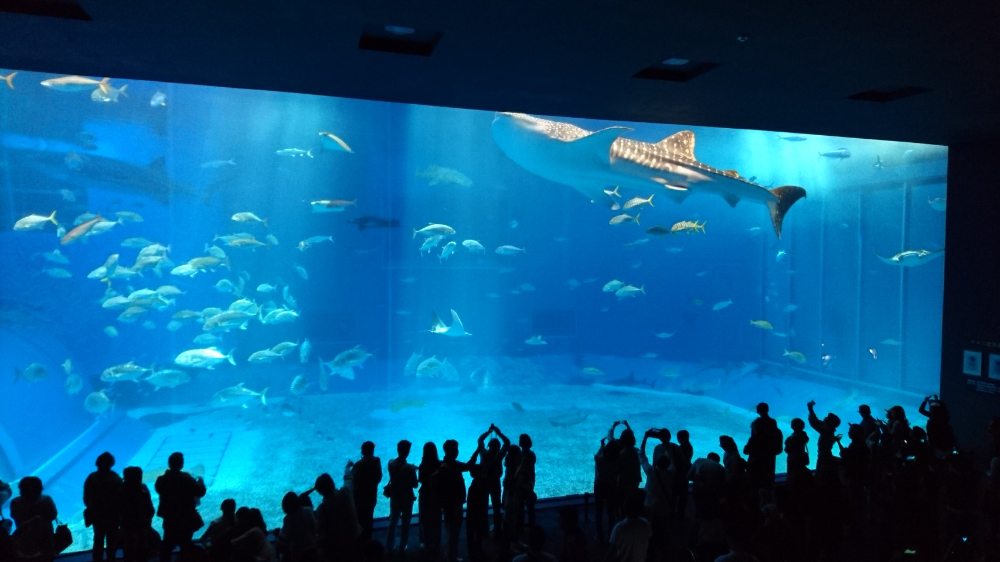
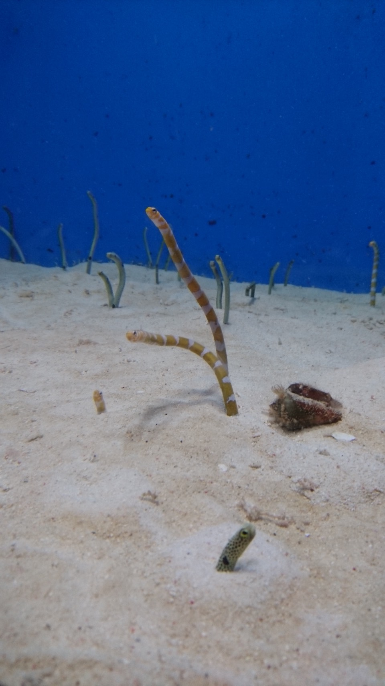
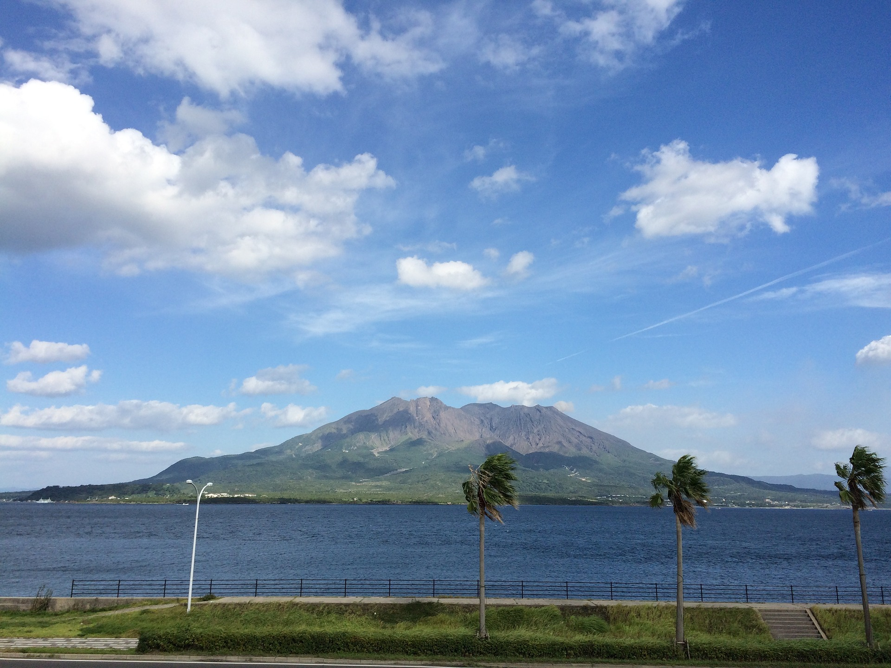
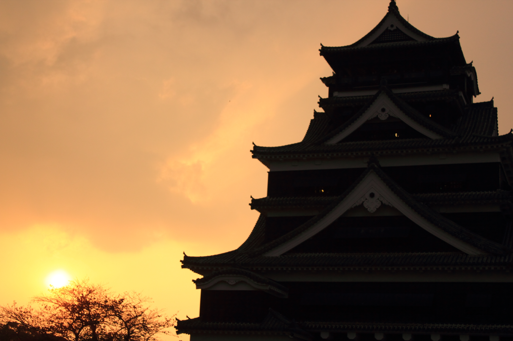
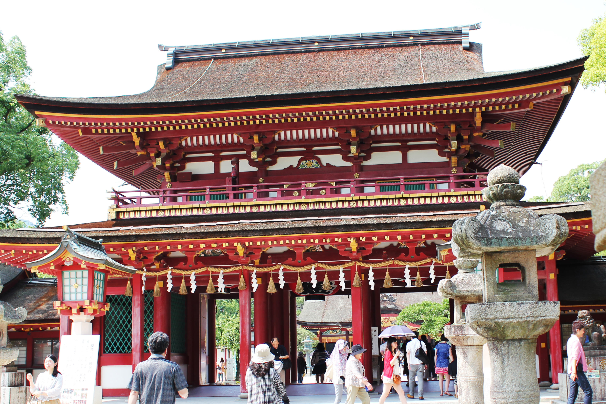
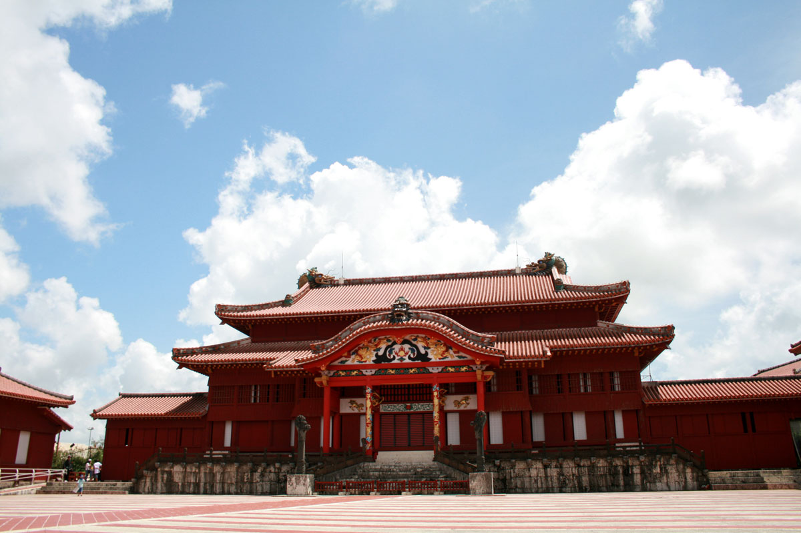
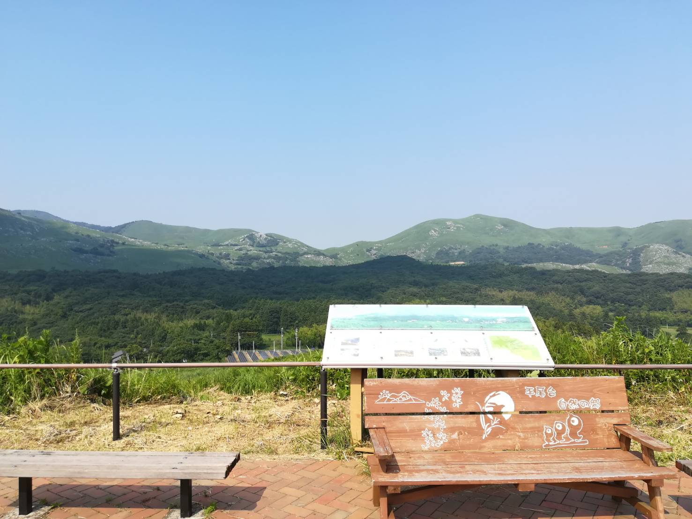
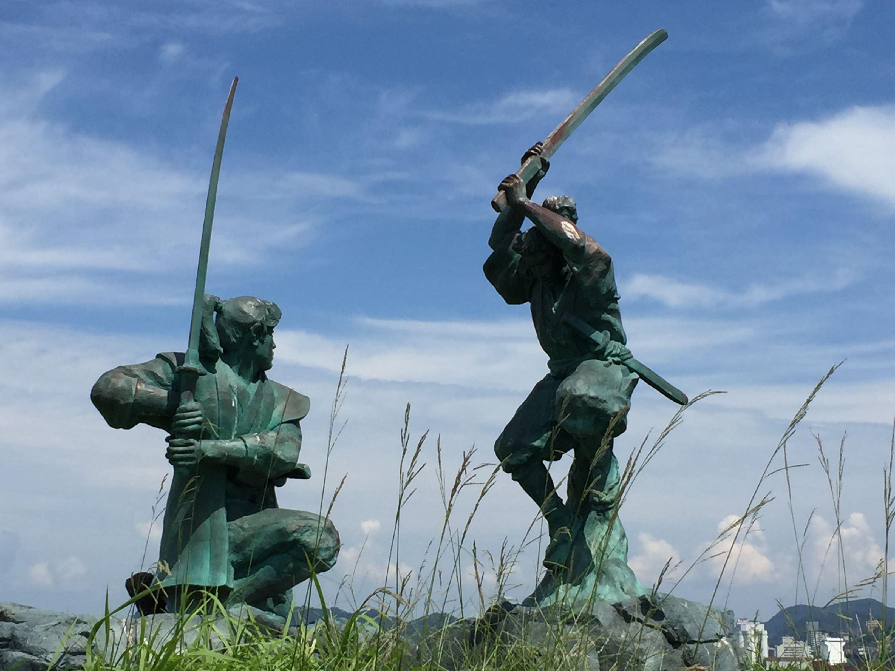

沖縄県本部町にある水族館。約740種のサンゴや海の生き物が飼育されている。見所は大水槽では悠々と泳ぐ全長8.7mものジンベイザメである。
鹿児島市内からでも、桜島に渡っても、何処からでもずっと目に入る位置にある感じの鹿児島の象徴である。
加藤清正が建てた平山城。日本三名城の一つとされている。
 HPはこちら太宰府天満宮は、全国に12,000社ある菅原道真公をお祀りする天神様の総本宮で、学問の神様として知られている。
 HPはこちら世界文化遺産にも登録された，琉球王国最大の建造物。独自の建築様式や，近くに点在する文化遺産も見どころ。
 HPはこちら石灰岩で形成された日本有数のカルスト台地である。天然記念物・国定公園に指定されている。
 HPはこちら宮本武蔵と佐々木小次郎が決闘を行った場所である。
 HPはこちら